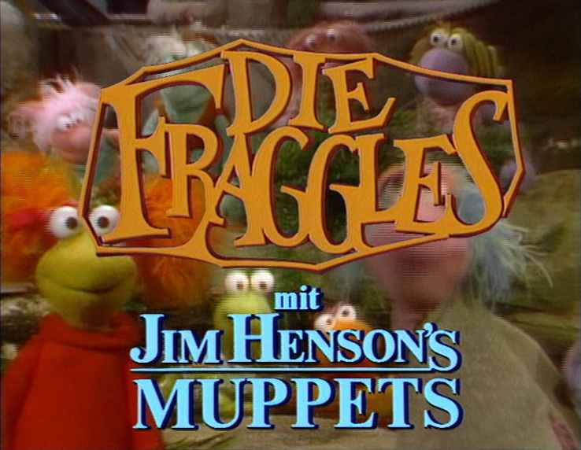

|  |
|---|
| Title: Die Fraggles ZDF (formerly) 3sat (formerly) Kabel 1 (formerly) Junior (formerly) Premiere Start (formerly) Anixe (formerly) ORF 2 (formerly) Premiere Austria (formerly) This dub features unique localized scenes for Doc (played by Hans-Helmut Dickow) and Uncle Traveling Matt. |